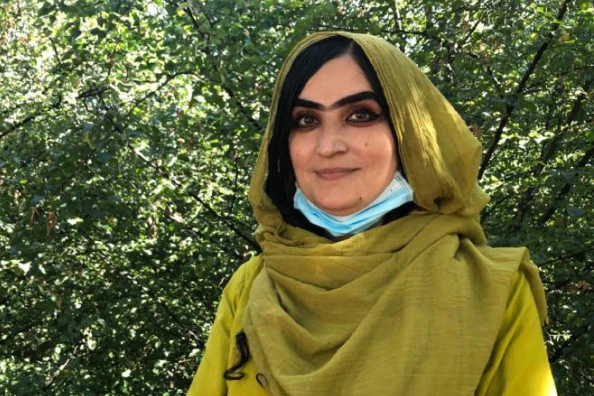

Women’s history in Afghanistan

From 1920 to the present day, the lives of Afghan women have been continuously disrupted by restrictions.
See articleA life turned upside down by the return of the Taliban
Discover the portrait of a committed feminist, Palwasha, who fled to France because of the Taliban threat.
See articleA step back in time for Afghan women?

A report that shows the protests of Afghan women fighting for their rights since the return of the Taliban to power in August 2021.
See article